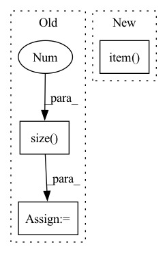

Pattern ID :7785

Before Change
rmse = mse.sqrt()
score = rmse.sum().item()
self.total_score += score
batch_size = Z.size(0)
self.num_instances += batch_size
def forward(self) -> float:
ave_score = self.total_score / self.num_instances
After Change
rmse *= y_mask
score = rmse.sum().item()
self.total_score += score
instances = y_mask.sum().item()
self.total_instances += instances
def forward(self) -> float:
ave_score = self.total_score / self.total_instances
In pattern: SUPERPATTERN
Frequency: 6
Non-data size: 3
Instances
Fragment ID: 27899131
Project Name: takuyashintate/tsts
Commit Name: cdd9dbe981ca3acc1f2d2c8d00a96d1fe14a049a
Time: 2021-08-18
Author: kmdbn2hs@gmail.com
File Name: tsts/metrics/rmse.py
M Class Name: RMSE
N Class Name: RMSE
M Method Name: update(4)
N Method Name: update(3)
M Parent Class: Metric
N Parent Class: Metric
M File Name: tsts/metrics/rmse.py
N File Name: tsts/metrics/rmse.py
M Start Line: 26
M End Line: 27
N Start Line: 21
N End Line: 28
'>
Before Change
n_inputs += len(x_batch)
x_batch = x_batch.to(device)
y_batch = y_batch.to(device).argmax(-1)
total += y_batch.size(0)
optimizer.zero_grad()
outputs = self.forward(x_batch)
loss = self.criterion(outputs, y_batch)
After Change
predictions = outputs.argmax(-1)
correct_predictions += (predictions == y_batch).sum()
total_loss += loss.item()
total_loss = total_loss / len(train_loader.dataset)
accuracy = 100 * correct_predictions / len(train_loader.dataset)
print(f"\n[Epoch {epoch + 1}]\t loss: {total_loss:.8f} \t accuracy: {accuracy:.2f}",
'>
Fragment ID: 27899117
Project Name: ginevracoal/robustbnns
Commit Name: 2c4285ab2e7f68618cea2f24393a46296a39f2b7
Time: 2020-06-23
Author: ginevracoal@gmail.com
File Name: model_nn.py
M Class Name: NN
N Class Name: NN
M Method Name: train(3)
N Method Name: train(3)
M Parent Class: nn.Module
N Parent Class: nn.Module
M File Name: model_nn.py
N File Name: model_nn.py
M Start Line: 128
M End Line: 151
N Start Line: 134
N End Line: 152
'>
Before Change
movie: batch_size
context_entities, context_words, entities, movie = batch
batch_size = movie.size(0)
entity_graph_representations = self.entity_encoder(None, self.entity_edges[0], self.entity_edges[1])
word_graph_representations = self.word_encoder(self.word_KG_embedding.weight, self.word_edges)
After Change
rec_loss = self.rec_loss(rec_scores, movie)
info_loss_mask = torch.sum(entities)
if info_loss_mask.item() == 0:
info_loss = None
else:
word_info_rep = self.infomax_norm(word_attn_rep) // (bs, dim)
'>
Fragment ID: 27899119
Project Name: rucaibox/crslab
Commit Name: 7170808360daa341d8a6e8e9fc80446ff85670e0
Time: 2020-12-01
Author: wxl1999@foxmail.com
File Name: crslab/model/kgsf_model.py
M Class Name: KGSFModel
N Class Name: KGSFModel
M Method Name: recommender(3)
N Method Name: recommender(3)
M Parent Class: BaseModel
N Parent Class: BaseModel
M File Name: crslab/model/kgsf_model.py
N File Name: crslab/model/kgsf_model.py
M Start Line: 177
M End Line: 206
N Start Line: 203
N End Line: 219
'>
Before Change
masks = torch.argmax(masks[0], dim=1)
est_probs = est_probs[0]
est_masks = torch.argmax(est_probs, dim=1)
n_frames = est_masks.size(0)
loss = nll_loss(torch.log(est_probs), masks).item()
test_losses.update(loss)
metrics = Metrics.get(est_masks, masks)
After Change
masks = torch.argmax(masks, dim=2)
est_masks = torch.argmax(est_probs, dim=1)
loss = nll_loss(torch.log(est_probs), masks).item() + lovasz_loss(est_probs, masks).item()
test_losses.update(loss)
metrics = Metrics.get(est_masks[0], masks[0])
test_metrics.update(metrics, n_objects[0].item())
'>
Fragment ID: 27899134
Project Name: hzxie/rmnet
Commit Name: 6b23640154d46bbb1602d733d973dfff5eac88e0
Time: 2020-04-26
Author: root@haozhexie.com
File Name: core/test.py
M Class Name: AnonimousClass
N Class Name: AnonimousClass
M Method Name: test_net(5)
N Method Name: test_net(5)
M Parent Class:
N Parent Class:
M File Name: core/test.py
N File Name: core/test.py
M Start Line: 77
M End Line: 99
N Start Line: 54
N End Line: 101
'>
Before Change
if args.model != "Transformer":
hidden = model.init_hidden(args.batch_size)
length = len(range(0, data_source.size(0) - 1, args.bptt))
verbose = args.verbose if epoch is not None else False
with tqdm(total=length,
After Change
args.log_writer.add_scalar("val/loss", val_loss.avg, epoch)
args.log_writer.add_scalar("val/ppl", torch.exp(val_loss.avg), epoch)
return val_loss.avg.item()
def train(epoch, model, optimizer, preconditioner, lr_schedules, lrs,
criterion, train_sampler, train_loader, args):
'>
Fragment ID: 27899121
Project Name: gpauloski/kfac_pytorch
Commit Name: 22a07a821dbaeffdcc00bb4614c8967b44803eeb
Time: 2020-04-09
Author: gpauloski@yahoo.com
File Name: examples/pytorch_wikitext_rnn.py
M Class Name: AnonimousClass
N Class Name: AnonimousClass
M Method Name: evaluate(5)
N Method Name: evaluate(5)
M Parent Class:
N Parent Class:
M File Name: examples/pytorch_wikitext_rnn.py
N File Name: examples/pytorch_wikitext_rnn.py
M Start Line: 226
M End Line: 258
N Start Line: 209
N End Line: 242
'>
Before Change
with torch.no_grad():
assert len(pred.shape) == 2
assert pred.size(0) == label.size(0)
total = pred.size(0)
correct = (pred.argmax(dim=1) == label).sum().float().item()
accuracy = correct / total
return accuracy * 100.0
After Change
assert len(pred.shape) == 2
assert pred.size(0) == label.size(0)
res = accuracy(pred, label)[0]
return res.item()
if __name__ == "__main__":
pred = torch.randn(size=(3, 5))
'>
Fragment ID: 27899141
Project Name: shaoeric/torch-atom
Commit Name: 5d058d01199bac1c2c6e1f36cdf696a2601f1def
Time: 2022-03-08
Author: shaoeric@foxmail.com
File Name: src/metrics/accuracy.py
M Class Name: Accuracy
N Class Name: Accuracy
M Method Name: __call__(3)
N Method Name: __call__(3)
M Parent Class:
N Parent Class:
M File Name: src/metrics/accuracy.py
N File Name: src/metrics/accuracy.py
M Start Line: 26
M End Line: 29
N Start Line: 41
N End Line: 42